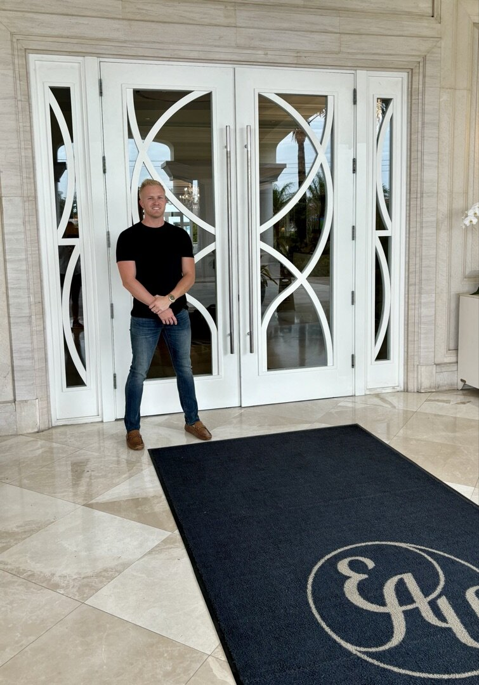

No. 01
Signature · First Impression
The new front door.
A custom decorative glass entrance set - the resort's first impression from S Ocean Blvd. Curved, interlocking pattern in white framing, executed to the detail level the address demands. The glass a guest touches before they touch anything else on the property.